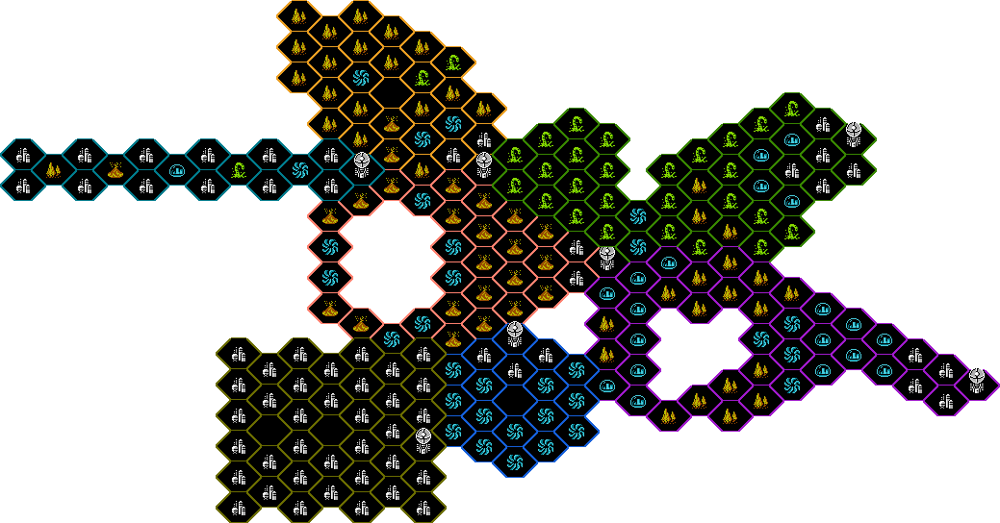
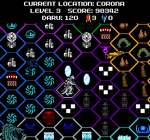

Discarded stuff Discarded stuff |
 Old Screenshots Old Screenshots |
 Wrong Way Wrong Way |
|---|
Here you can find everything related to...
THE BOARD
|
What's this? THE BOARD is a combination of a large number of boards from the original game, creepypasta, Replay, April Fools stories and fanpastas. At first I did it out of sheer boredom, sharing it on various discord servers, but now I like to see it as a demonstration of all that this community has come to do. |
|
Here are all the versions that I have been doing, so you can see how it has been expanding by clicking on the image. The fanpastas included are: Chaospasta, Compassion, Fingerbones, SCARYPASTA GOES TO HELL, Insolvent and Wrong Way. |
|
While I'm at it, I'm bringing some extras! First, this is the very first version, from 2019 (yes, most old Nes Godzilla stuff I did goes back to 2019). Here are all the worlds in the game except PLUTO, which is freaking huge. It was by showing in a discord chat this image that I was encouraged to make the first version of THE BOARD; and the rest is history. |
|  |
I came up with this version with the idea of the ALKALI society expanding to other planets on the board, colonizing them and settling in these parts of the different sectors. I doubt I will ever update this again, as it ended up being a tedious thing to do. |
 |
And, to finish, here is a screenshot of a hypothetical multiplayer/MMO mode on this map. Just imagine trying to explore this, it's crazy. |
|  |